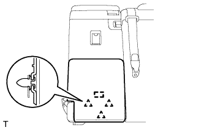
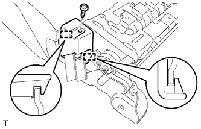
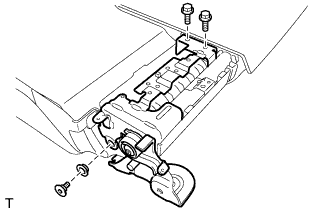
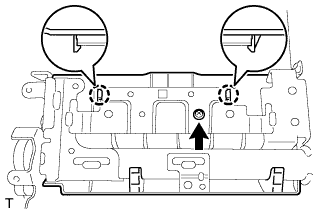
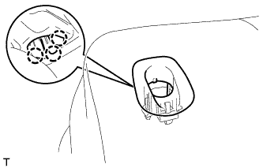
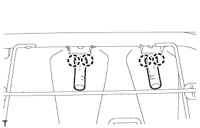
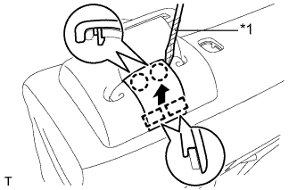
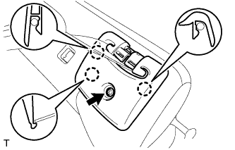
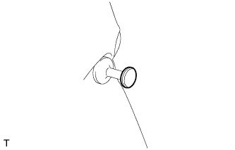

ЦЕНТРАЛЬНЫЙ РЕМЕНЬ БЕЗОПАСНОСТИ ЗАДНЕГО СИДЕНЬЯ В СБОРЕ (для моделей с сиденьем раздельного типа 60/40 с двойным складыванием с правой стороны) > СНЯТИЕ |
| 1. СНИМИТЕ ПРАВОЕ ЗАДНЕЕ СИДЕНЬЕ В СБОРЕ |
Снимите правое заднее сиденье № 1 в сборе (Нажмите здесь).
| 2. СНИМИТЕ ПАНЕЛЬ СПИНКИ СИДЕНЬЯ № 1 В СБОРЕ |
|  |
С помощью съемника фиксаторов расцепите 3 фиксаторов.
Отсоедините направляющую и снимите панель.
| 3. СНИМИТЕ ВНУТРЕННЮЮ ОТКИДНУЮ КРЫШКУ ПРАВОГО ЗАДНЕГО СИДЕНЬЯ |
 |
Выверните винт.
Освободите 2 направляющих и снимите крышку.
| 4. СНИМИТЕ ЗАМОК РЕМНЯ БЕЗОПАСНОСТИ ЗАДНЕГО ЦЕНТРАЛЬНОГО СИДЕНЬЯ В СБОРЕ |
 |
Отсоедините крепежную ленту и снимите ленту.
Отверните болт и снимите замок ремня безопасности.
| *1 | Ленточный хомут |
| 5. СНИМИТЕ ОБИВКУ СПИНКИ ЦЕНТРАЛЬНОГО СИДЕНЬЯ В СБОРЕ |
|  |
Выверните винт.
Освободите 2 направляющих и снимите крышку.
| 6. СНИМИТЕ СПИНКУ ЦЕНТРАЛЬНОГО СИДЕНЬЯ В СБОРЕ |
|  |
С помощью торцевого ключа с головкой "TORX" T45 выверните болт "TORX" и снимите втулку.
Выверните 2 болта и снимите спинку центрального сиденья.
| 7. СНИМИТЕ ОБИВКУ СПИНКИ ЦЕНТРАЛЬНОГО СИДЕНЬЯ № 2 |
|  |
Выверните винт.
Отцепите 2 захвата и снимите накладку.
| 8. СНИМИТЕ КРЫШКУ ЗАМКА СПИНКИ ПРАВОГО ЗАДНЕГО СИДЕНЬЯ |
 |
Выверните 2 винта.
Освободите 2 направляющих и снимите крышку.
| 9. СНИМИТЕ ЗАМОК СПИНКИ ПРАВОГО ЗАДНЕГО СИДЕНЬЯ В СБОРЕ |
 |
Снимите 2 витковые пружины.
 |
Выверните 2 болта.
Перемещая кнопку разблокировки в направлении, указанном на рисунке стрелкой, отсоедините ее от втулки и снимите замок спинки сиденья.
| 10. СНИМИТЕ ИЗОЛИРУЮЩУЮ ВТУЛКУ КНОПКИ ОСТАНОВА СПИНКИ ЗАДНЕГО СИДЕНЬЯ |
|  |
Отсоедините 3 захвата и снимите втулку.
| 11. СНИМИТЕ ДЕРЖАТЕЛЬ ПОДГОЛОВНИКА ЗАДНЕГО СИДЕНЬЯ № 1 В СБОРЕ |
|  |
Освободите 4 захвата и снимите 2 держателя.
| 12. СНИМИТЕ КРЫШКУ КРЕПЛЕНИЯ РЕМНЯ БЕЗОПАСНОСТИ |
|  |
С помощью отвертки освободите 2 захвата и 2 направляющих, а затем снимите крышку.
| *1 | Защитная клейкая лента |
| 13. СНИМИТЕ КРЫШКУ ПЛЕЧЕВОГО КРЕПЛЕНИЯ РЕМНЯ ЗАДНЕГО СИДЕНЬЯ |
|  |
Выверните винт.
Отцепите 3 захвата и снимите обивку.
Отсоедините ремень безопасности от крышки.
| 14. СНИМИТЕ КОЛПАЧОК ЗАЩЕЛКИ ЗАМКА СПИНКИ ЗАДНЕГО СИДЕНЬЯ |
|  |
Снимите колпачок с защелки.
| 15. СНИМИТЕ ЗАЩЕЛКУ ЗАМКА ЗАДНЕГО СИДЕНЬЯ |
 |
Снимите защелку с помощью торцевого ключа с головкой "TORX" T45.
| 16. СНИМИТЕ ОБИВКУ СПИНКИ СИДЕНЬЯ ВМЕСТЕ С ПОДУШКОЙ |
 |
Снимите витковые пружины, освободите крепление, а затем снимите обивку спинки сиденья с подушкой.
| *1 | Крюк |
| *2 | Витковая пружина |
Отсоедините ремень безопасности от обивки спинки сиденья с подушкой.
| 17. СНИМИТЕ КРАЕВОЕ УКРЕПЛЕНИЕ СПИНКИ ЗАДНЕГО СИДЕНЬЯ |
Отсоедините защитный элемент от рамы спинки сиденья.
| 18. СНИМИТЕ НАПРАВЛЯЮЩУЮ ПЛЕЧЕВОГО КРЕПЛЕНИЯ РЕМНЯ ЗАДНЕГО СИДЕНЬЯ |
 |
Освободите захват и направляющую, а затем снимите направляющую ремня.
| 19. СНИМИТЕ ПРАВЫЙ 3-ТОЧЕЧНЫЙ РЕМЕНЬ БЕЗОПАСНОСТИ СИДЕНЬЯ № 1 В СБОРЕ |
 |
Отверните гайку, выверните болт, освободите 2 захвата и снимите ремень безопасности.